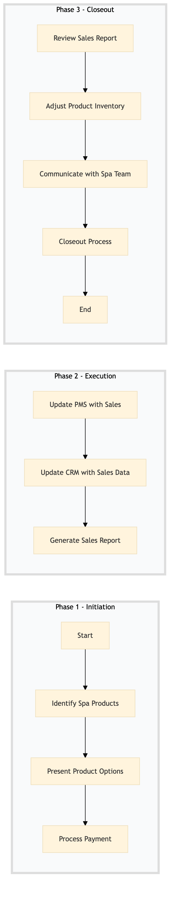

| Role | Steps |
|---|---|
| Spa Retail Associate | 1.1 1.2 1.3 2.1 2.2 3.2 |
| Revenue Manager | 2.3 3.1 |
| Spa Manager | 3.3 |
| Step | Name | Role | System | Input | Output | KPI | Dec? | Exc? | Pain Point / Risk |
|---|---|---|---|---|---|---|---|---|---|
| 1.1 | Identify Spa Products | Spa Retail Associate | Oracle OPERA Cloud | Guest profile and treatment details | List of recommended spa products | Less than 2 minutes | N | Y | Inconsistent product recommendations based on guest profiles |
| 1.2 | Present Product Options | Spa Retail Associate | Oracle OPERA Cloud | List of recommended spa products | Guest's product selection | Less than 5 minutes | Y | N | Handling guest objections or requests for alternative products |
| 1.3 | Process Payment | Spa Retail Associate | Oracle OPERA Cloud, Oracle MICROS Simphony | Guest's product selection and payment method | Payment confirmation | Less than 1 minute | N | Y | Handling payment errors or declined transactions |
| 2.1 | Update PMS with Sales | Spa Retail Associate | Oracle OPERA Cloud | Guest's product selection and payment confirmation | Updated guest account in PMS | Less than 2 minutes | N | Y | Recording errors or missing transactions |
| 2.2 | Update CRM with Sales Data | Spa Retail Associate | Marriott Bonvoy CRM | Guest's product selection and payment confirmation | Updated guest profile in CRM | Less than 2 minutes | N | Y | Data synchronization issues between PMS and CRM |
| 2.3 | Generate Sales Report | Revenue Manager | Oracle OPERA Cloud, Microsoft Power BI | Daily sales data from PMS | Sales report | Less than 10 minutes | N | Y | Generating accurate and timely reports |
| 3.1 | Review Sales Report | Revenue Manager | Microsoft Power BI | Sales report | Action plan for improving sales | Less than 15 minutes | Y | N | Interpreting and acting on sales data |
| 3.2 | Adjust Product Inventory | Spa Retail Associate | Oracle OPERA Cloud, Birchstreet Procurement | Sales report and inventory levels | Updated product inventory | Less than 30 minutes | N | Y | Ensuring timely restocking of products |
| 3.3 | Communicate with Spa Team | Spa Manager | Oracle OPERA Cloud, Microsoft Teams | Action plan for improving sales | Team meeting minutes | Less than 1 hour | Y | N | Effective communication and team alignment |
| 3.4 | Closeout Process | Spa Retail Associate | Oracle OPERA Cloud | Final sales data for the day | Completed day's transactions and reports | Less than 5 minutes | N | Y | Completing all necessary end-of-day tasks |
This process outlines the operational steps for Spa Retail & Product Sales at a full-service Marriott hotel using Oracle OPERA Cloud PMS and other key Marriott systems.